from dotenv import load_dotenv
from langchain.embeddings import OpenAIEmbeddings
from langchain.retrievers.multi_vector import MultiVectorRetriever
from langchain.schema import Document
from langchain.storage import InMemoryStore
from langchain.vectorstores import FAISS
load_dotenv()
# create 3 documents and its summaries
docs = [
Document(page_content='doc' + str(i), metadata={'doc_id': 'doc' + str(i)})
for i in range(1, 4)
]
summarys = [
Document(page_content='summary' + str(i), metadata={'doc_id': 'doc' + str(i)})
for i in range(1, 4)
]
# initialize docstore
docstore = InMemoryStore()
docstore.mset(list(zip(['doc' + str(i) for i in range(1, 4)], docs)))
# put documents and summaries in the vector store
multi_vector_vectorstore = FAISS.from_documents(docs + summarys, OpenAIEmbeddings())
# initialize retriever
sample_retriever = MultiVectorRetriever(
vectorstore=multi_vector_vectorstore,
docstore=docstore,
id_key='doc_id',
search_kwargs={'k': 4},
)Multi-Vector Retrieverの使い方とその効果
NLP
LLM
LangChain
内容概要
この記事では、Multi-Vector Retrieverの使用方法を紹介し、複数の実験を通じてその効果を検証しました。実験から得られた主な知見は以下の3点です。
- テキストを単純に結合してドキュメントにサマリーを追加すると、精度がむしろ低下することがわかりました。
Multi-Vector Retrieverを使用してもTop1の精度は向上しませんでしたが、MRR（平均逆順位）を見ると全体の精度が改善されていることが分かります。- センテンスレベルでの検索が常に良い結果をもたらすわけではないことが明らかになりました。
Multi-Vector Retrieverについて
Multi-Vector RetrieverはLangChainシステムの検索機能の一つで、複数の埋め込みベクトルを使用して検索を行うことが特徴です。ドキュメントのサマリーを作成し、ドキュメントとサマリーの両方に対してベクトルを生成し、それらを用いて検索を行うことができます。
簡単な使用例
以下に簡単な使用例を説明します。
初期化
例えば、現在3つのドキュメントがあり、それぞれにサマリーを生成したとします。これらをすべて検索に使用したい場合、初期化する際にはまず、IDを付けてそれぞれのドキュメントをdocstoreに追加します。さらに、ドキュメントとサマリーの両方にMetadataとしてIDを付け、ベクトルストアを作成する必要があります。

使用方法
使用方法は通常のRetrieverと同様で、get_relevant_documents関数を呼び出すだけです。この関数内で行われるプロセスは、まずクエリを使ってVectorstoreで検索を行います。検索にヒットしたアイテムからIDを抽出し、そのIDを使用してDocstoreからドキュメントを取得し、結果を返します。
ここでの注意点は、検索でk=4を指定した場合、上位4位の結果の中にID2が2回出現することがあります。そのため、最終的な結果は4つではなく、3つのドキュメントが出力されることになります。

[Document(page_content='doc1', metadata={'doc_id': 'doc1'}),
Document(page_content='doc2', metadata={'doc_id': 'doc2'}),
Document(page_content='doc3', metadata={'doc_id': 'doc3'})]なお、LangChainにあるもう一個Parent Document Retrieverはほぼこれと同じ概念です。なんでわざわざ2つ作ったかが謎です。
実験結果
以下の実験を行いました。
- サマリーを生成し、それをベクトルとして追加する
- ドキュメントを文単位に切り、文単位で検索を行う
実験の設定
使うデータはいつもの東京都立大学のeラーニングシステムのQ&Aデータです。このデータは、東京都立大学で導入されたeラーニングシステムのユーザーから2015年4月から2018年7月までに報告された問題点としてのQ&Aデータを収集したものです。427の質問と79の回答が含まれています。質問にどの回答に紐づくかのラベルがあります。
データの様子は下記の通りです。
実験用コード
import pandas as pd
import html2text
# https://zenodo.org/record/2783642
q_df = pd.read_csv('https://zenodo.org/record/2783642/files/Questions.csv')
a_df = pd.read_csv('https://zenodo.org/record/2783642/files/Answers.csv')
print('q_df.shape:', q_df.shape)
print('a_df.shape:', a_df.shape)
q_df.columns = [c.strip() for c in q_df.columns]
a_df.columns = [c.strip() for c in a_df.columns]
a_df['Text'] = a_df['Text'].apply(lambda x: html2text.html2text(x))
df = q_df.merge(a_df, on='AID')
df.columns = ['query', 'AID', 'document']
metadata = a_df[['AID']].to_dict(orient='records')
documents = a_df['Text'].tolist()
query_list = list(zip(q_df['Text'], q_df['AID']))
display(q_df.head(3))
display(a_df.head(3))q_df.shape: (427, 2)
a_df.shape: (79, 2)| Text | AID | |
|---|---|---|
| 0 | 履修している授業で先生が資料をアップロードしているはずだが、コース上に資料が見当たらない。 | A001 |
| 1 | 資料をマイページに置いたが、学生からは見えなかった。 | A001 |
| 2 | 前期の科目の「資料」を学生から見られないようにするにはどうしたら良いか？ | A001 |
| AID | Text | |
|---|---|---|
| 0 | A001 | 資料が見つからない場合は、以下の点を確認してください。 \n \n \n【受講生編】 ... |
| 1 | A002 | 資料のアップロードやお知らせ作成時の電子メールでの通知の有無は、各授業の担当教員が設定できま... |
| 2 | A003 | kibacoにはファイルへパスワードを設定する機能はありません。資料は受講生全員に開示されま... |
評価指標は以下の3つです。
- Mean Reciprocal Rank（MRR）: 正解ドキュメントの順位の平均の逆数で、ランク全体を評価する指標。
- Recall@1: 正解ドキュメントが1番目に並んでいるかどうかを評価する指標。
- Recall@5: 正解ドキュメントが上位5位以内に入っているかどうかを評価する指標。
その結果のまとめは以下になります。
| 実験名 | mrr | recall_at_1 | recall_at_5 |
|---|---|---|---|
| ドキュメントのみ | 0.6777 | 0.5457 | 0.8454 |
| サマリーのみ | 0.6475 | 0.5035 | 0.8244 |
| テキスト結合 ドキュメント+サマリー |
0.6612 | 0.5199 | 0.8407 |
| Multi-Vector Retriever ドキュメント+サマリー |
0.683 | 0.5457 | 0.8501 |
| Multi-Vector Retriever センテンスレベル |
0.66 | 0.5199 | 0.8454 |
実験からわかることとしては以下の3点です。
- テキストを単純に結合してドキュメントにサマリーを追加すると、精度がむしろ低下することがわかりました。
Multi-Vector Retrieverを使用してもTop1の精度は向上しませんでしたが、MRR（平均逆順位）を見ると全体の精度が改善されていることが分かります。- センテンスレベルでの検索が常に良い結果をもたらすわけではないことが明らかになりました。
実験の詳細 + コード
実験の詳細は以下です。興味がある方が次にご覧ください。ちなみに、実験の効率化するために、並列化を行いました。
実験用コード
import sys
sys.path.append('../')
from src.parallel import parallelize_function
from dataclasses import dataclass
DOC_NUM = len(a_df)
@dataclass
class EvaluationResults:
result_df: pd.DataFrame
mrr: float
recall_at_1: float
recall_at_5: float
def mrr(rank_array):
return (1 / rank_array).mean()
def recall_at_k(rank_array, k):
return (rank_array <= k).mean()
# Define a function to be executed in parallel
def evaluate_single_query(query_aid_tuple, search_func, doc_num):
query, aid = query_aid_tuple
search_result = search_func(query)
aid_list = []
for doc in search_result:
aid_list.append(doc.metadata['doc_id'])
if aid not in aid_list:
rank = doc_num + 1
else:
rank = aid_list.index(aid) + 1
return query, rank, aid_list
# Parallelized evaluate function
def parallel_evaluate(query_list, search_func, max_workers=20, doc_num=DOC_NUM):
# Prepare arguments for parallel execution
args_list = [(query_aid, search_func, doc_num) for query_aid in query_list]
# Execute the evaluate_single_query function in parallel
results = parallelize_function(
evaluate_single_query, args_list, max_workers=max_workers
)
# Process results and create a DataFrame
result_list = [result for result in results if not isinstance(result, Exception)]
result_df = pd.DataFrame(result_list, columns=['query', 'rank', 'rank_result'])
# Calculate evaluation metrics
return EvaluationResults(
result_df,
mrr(result_df['rank']),
recall_at_k(result_df['rank'], 1),
recall_at_k(result_df['rank'], 5),
)
実験用並列コード
from concurrent.futures import ThreadPoolExecutor, as_completed
from itertools import cycle
from tenacity import retry, stop_after_attempt, wait_exponential
from tqdm.auto import tqdm
@retry(wait=wait_exponential(multiplier=5, min=1, max=60), stop=stop_after_attempt(5))
def retry_wrapper(func, *args, **kwargs):
return func(*args, **kwargs)
def parallelize_function(funcs, args_list, kwargs_list=None, max_workers=10):
if kwargs_list is None:
kwargs_list = [{}] * len(
args_list
) # Empty dictionaries if no kwargs are provided
if not isinstance(funcs, list):
funcs = [funcs] # Make it a list if a single function is provided
# Ensure args_list and kwargs_list have the same length
if len(args_list) != len(kwargs_list):
raise ValueError("args_list and kwargs_list must have the same length.")
results = [None] * len(args_list) # Pre-allocate results list with None values
with ThreadPoolExecutor(max_workers=max_workers) as executor:
futures_to_index = {}
func_iter = cycle(funcs) # Use itertools.cycle to handle function iteration
# Submit tasks to the executor
for i, (args, kwargs) in enumerate(zip(args_list, kwargs_list)):
func = next(func_iter)
future = executor.submit(retry_wrapper, func, *args, **kwargs)
futures_to_index[future] = i # Map future to its index in args_list
# Collect results as tasks complete
for future in tqdm(
as_completed(futures_to_index),
total=len(futures_to_index),
desc="Processing tasks",
):
index = futures_to_index[future]
try:
result = future.result()
results[index] = result # Place result in the corresponding index
except Exception as exc:
print(f"Task {index} generated an exception: {exc}")
results[index] = exc # Store the exception in the results list
return results
# Example usage:
# funcs = [chain1.invoke, chain2.invoke] # List of functions for load balancing
# args_list = [(arg1,), (arg2,), ...] # List of argument tuples
# kwargs_list = [{"kwarg1": value1}, {"kwarg2": value2}, ...] # List of keyword argument dictionaries
# results = parallelize_function(funcs, args_list, kwargs_list)メタデータ実験
今回はサマリーを生成し、それをベクトルとして追加します。
まず必要なのはデータ生成です。まず簡単のプロンプトを書いて、それぞれのデータを生成します。これも本記事の本題ではないため、コードを折り畳みします。
データ生成用コード
from dotenv import load_dotenv
from langchain.chat_models.openai import ChatOpenAI
from langchain.embeddings import OpenAIEmbeddings
from langchain.schema import HumanMessage
from tqdm.auto import tqdm
_ = load_dotenv()
llm = ChatOpenAI(temperature=0, model='gpt-3.5-turbo', request_timeout=20)
def generate_metadata(msg, text_list, save_path):
metadata = []
for txt in tqdm(text_list):
result = llm([HumanMessage(content=msg.format(doc=txt))]).content.replace(
'\n', ' '
)
metadata.append(result)
with open(save_path, 'w') as f:
f.write('\n'.join(metadata))
msg = """
次のドキュメントを50字以内にサマリーしてください。
===ドキュメント===
{doc}
"""
text_list = a_df.Text.to_list()
generate_metadata(msg, text_list, './3.5_turbo_summaries.txt')
with open('3.5_turbo_summaries.txt', 'r') as f:
summaries = f.read().split('\n')出力したデータのサンプルをお見せします。
資料が見つからない場合の確認事項は以下の通りです。受講生は自身が登録されているコースを確認し、資料の利用可能期間を確認してください。教員は科目に対応するコースに資料を掲載し、同じ曜日・時限・教室で開講する別の科目がないか確認し、フォルダやファイルが非表示になっていないか、利用可能期間が正しく設定されているかを確認してください。次に直接ドキュメントに追加した場合とMulti-Vector Retrieverを使う場合の検索精度をみます。
from langchain.retrievers.multi_vector import (
MultiVectorRetriever,
ParentDocumentRetriever,
)
from langchain.schema.document import Document
from langchain.storage import InMemoryStore
from langchain.vectorstores import FAISS
docs = [
Document(page_content=s, metadata={'doc_id': a_df.AID[i]})
for i, s in enumerate(a_df.Text.tolist())
]
summarys = [
Document(page_content=summaries[i], metadata={'doc_id': a_df.AID[i]})
for i, s in enumerate(a_df.Text.tolist())
]
doc_summarys = [
Document(
page_content=f'summary: {summaries[i]} \n text: {a_df.Text[i]}',
metadata={'doc_id': a_df.AID[i]},
)
for i, s in enumerate(a_df.Text.tolist())
]doc_result = parallel_evaluate(
query_list, lambda q: vectorstore_doc.similarity_search(q, k=DOC_NUM)
)
summary_result = parallel_evaluate(
query_list, lambda q: vectorstore_summary.similarity_search(q, k=DOC_NUM)
)
doc_summary_result = parallel_evaluate(
query_list, lambda q: vectorstore_doc_summary.similarity_search(q, k=DOC_NUM)
)result_df = pd.DataFrame(
[
['only_doc', doc_result.mrr, doc_result.recall_at_1, doc_result.recall_at_5],
[
'summary',
summary_result.mrr,
summary_result.recall_at_1,
summary_result.recall_at_5,
],
[
'doc_summary',
doc_summary_result.mrr,
doc_summary_result.recall_at_1,
doc_summary_result.recall_at_5,
],
],
columns=['model_id', 'mrr', 'recall_at_1', 'recall_at_5'],
).sort_values('mrr', ascending=False)
result_df.round(4)| model_id | mrr | recall_at_1 | recall_at_5 | |
|---|---|---|---|---|
| 0 | only_doc | 0.6777 | 0.5457 | 0.8454 |
| 2 | doc_summary | 0.6612 | 0.5199 | 0.8407 |
| 1 | summary | 0.6475 | 0.5035 | 0.8244 |
ご覧の通り、それぞれ直接ドキュメントに追加する場合は、性能が逆に悪化しました。
次に説明の中と同じようにドキュメントとサマリーに結合した場合どうなるかをみてみます。
multi_vector_vectorstore = FAISS.from_documents(docs + summarys, OpenAIEmbeddings())
# The storage layer for the parent documents
store = InMemoryStore()
# The retriever (empty to start)
multi_vector_retriever = MultiVectorRetriever(
vectorstore=multi_vector_vectorstore,
docstore=store,
id_key='doc_id',
search_kwargs={'k': 1000},
)
multi_vector_retriever.docstore.mset(list(zip(a_df.AID.tolist(), docs)))
multi_vectore_result = parallel_evaluate(
query_list, lambda q: multi_vector_retriever.get_relevant_documents(q)
)# add the result to the dataframe as a row
new_row = (
{
'model_id': 'multi_vector',
'mrr': multi_vectore_result.mrr,
'recall_at_1': multi_vectore_result.recall_at_1,
'recall_at_5': multi_vectore_result.recall_at_5,
},
)
result_df = pd.concat([result_df, pd.DataFrame(new_row)], ignore_index=True)
result_df.round(4).sort_values('mrr', ascending=False)| model_id | mrr | recall_at_1 | recall_at_5 | |
|---|---|---|---|---|
| 3 | multi_vector | 0.6830 | 0.5457 | 0.8501 |
| 0 | only_doc | 0.6777 | 0.5457 | 0.8454 |
| 1 | doc_summary | 0.6612 | 0.5199 | 0.8407 |
| 2 | summary | 0.6475 | 0.5035 | 0.8244 |
ドキュメントを文単位に切り、文単位で検索を行う
次にドキュメントを文単位に切り、文単位で検索を行います。
sentences = [
Document(page_content=sent, metadata={'doc_id': a_df.AID[i]})
for i, s in enumerate(a_df.Text.tolist())
for sent in s.split('\n')
]
print(len(sentences))
multi_vector_vectorstore_sent = FAISS.from_documents(sentences, OpenAIEmbeddings())
# The storage layer for the parent documents
store = InMemoryStore()
# The retriever (empty to start)
multi_vector_retriever_sent = MultiVectorRetriever(
vectorstore=multi_vector_vectorstore_sent,
docstore=store,
id_key='doc_id',
search_kwargs={'k': 1000},
)
multi_vector_retriever_sent.docstore.mset(list(zip(a_df.AID.tolist(), docs)))
multi_vector_retriever_sent_result = parallel_evaluate(
query_list, lambda q: multi_vector_retriever_sent.get_relevant_documents(q)
)333multi_vector_retriever_sent_result = parallel_evaluate(
query_list, lambda q: multi_vector_retriever_sent.get_relevant_documents(q)
)new_row = (
{
'model_id': 'multi_vector_sent',
'mrr': multi_vector_retriever_sent_result.mrr,
'recall_at_1': multi_vector_retriever_sent_result.recall_at_1,
'recall_at_5': multi_vector_retriever_sent_result.recall_at_5,
},
)
result_df = pd.concat([result_df, pd.DataFrame(new_row)], ignore_index=True)
result_df.round(4).sort_values('mrr', ascending=False)| model_id | mrr | recall_at_1 | recall_at_5 | |
|---|---|---|---|---|
| 4 | multi_vector_all_docs | 0.6831 | 0.5433 | 0.8595 |
| 3 | multi_vector | 0.6830 | 0.5457 | 0.8501 |
| 0 | only_doc | 0.6777 | 0.5457 | 0.8454 |
| 1 | doc_summary | 0.6612 | 0.5199 | 0.8407 |
| 5 | multi_vector_sent | 0.6600 | 0.5199 | 0.8454 |
| 2 | summary | 0.6475 | 0.5035 | 0.8244 |